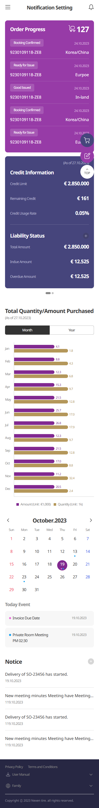
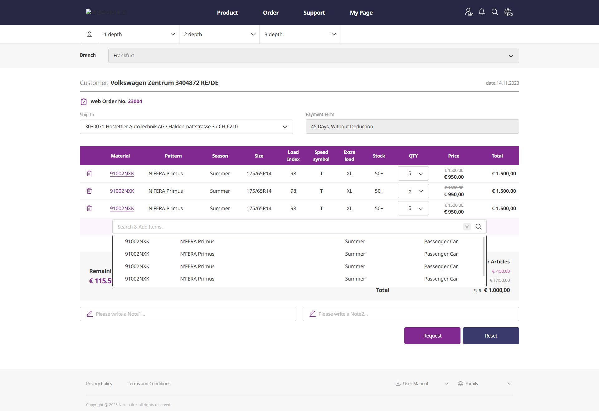
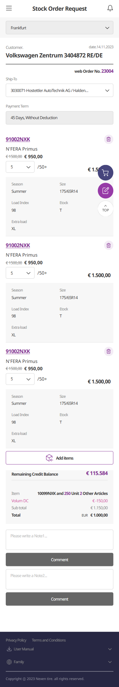

<div class="sub-page">
    <div class="inner">
        <div class="project-header">
            <h2>@@subPageTitle</h2>
        </div>

        <ul class="project-info dash">
            <li>넥센타이어 디지털 CRM 1단계 구축 프로젝트에 웹퍼블리셔로 파견되어, CRM 운영을 위한 관리자 페이지와 고객 접점 채널의 UI 퍼블리싱을
                담당했습니다.<br>
                대규모 기업 시스템 특성에 맞춰 안정성·일관성·확장성을 고려한 구조로 작업하며, 타 부서(기획·백엔드·디자인)와의 협업을 기반으로 효율적인 퍼블리싱 환경을
                구축했습니다.</li>
        </ul>

        <ul class="project-info dash">
            <li>CRM 관리자 페이지 퍼블리싱</li>
            <li>pc / 모바일 반응형 구축</li>
            <li>Gulp 환경</li>
            <li>HTML / SCSS / JavaScript</li>
            <li>기여도 50%</li>
            <li>로그인 / 회원가입 /상품리스트 / 상품상세(단품/셋트/품절/추가구성) / 마이페이지 (주문정보 / 혜택정보 / 나의정보 / 위시리스트) / 장바구니 / 메일
                템플릿 등등</li>
        </ul>

        <ul class="project-list">
            <li class="box-wrap">
                <h3>메인</h3>
                <div class="box pc-show">
                    
                </div>
                <div class="box mo-show">
                    
                </div>
            </li>

            <li class="box-wrap">
                <h3>Stock Order Request</h3>
                <div class="box pc-show">
                    
                </div>
                <div class="box mo-show">
                    
                </div>
            </li>
        </ul>

        <div class="project-type">
            <h4>작업 특징</h4>
            <ul class="dash">
                <li>관리자 중심의 복잡한 구조를 명확하고 일관된 UI로 재정비</li>
                <li>반복되는 컴포넌트를 구조화해 퍼블리싱 효율 및 유지보수성 향상</li>
                <li>개발자와 레이아웃 연동 협업</li>
                <li>기획자와 긴밀한 커뮤니케이션을 통해
                    변경 요구(기능 추가/삭제)에 빠르게 대응</li>
            </ul>
        </div>
    </div>
</div>